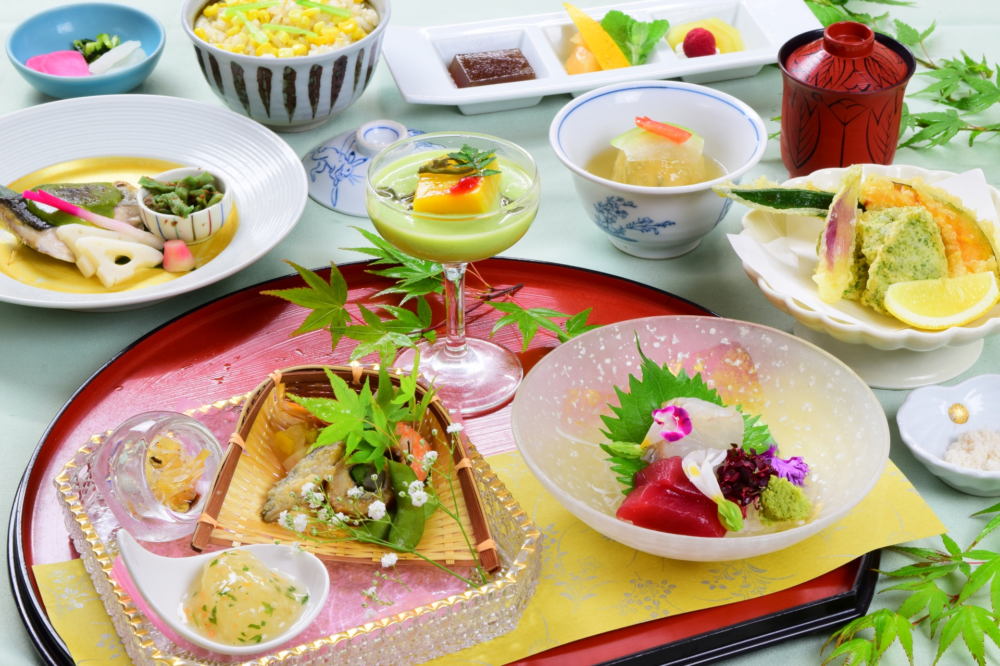

「結の宿」では、四季折々の山陰の旬を大切に、
素材そのものの滋味を活かしたお料理をご提供しております。
日常を離れ、ゆるやかに“時をほどく”ひとときにふさわしい、
繊細でやさしい味わいをお楽しみください。
目でも舌でも季節を感じていただけるよう、盛りつけや
器にも心を込めてご用意いたします。

旅館で過ごす夜は、日常の喧騒を離れ、心ゆくまで寛げる特別な時間。
季節の移ろいを映す、旬の食材をふんだんに使った会席料理をご用意しております。
地元・島根の海の幸や山の恵み、新鮮な野菜、旨味豊かな松江牛など、素材本来の味わいを大切に、一品一品丁寧に仕上げました。
通常コースに加え、料理長こだわりの特別コースもご用意。松江牛や厳選魚介をさらに贅沢に使った、特別な夜にふさわしい内容となっております。
ご予約時に、ご希望のプランをお選びいただけます。心ほどける美味のひとときを、どうぞごゆっくりお楽しみください。
旅先で迎える朝は、特別なひととき。私たちの旅館では、そんな朝にふさわしい、目にも舌にも心地よい和朝食をご用意しております。
時間に合わせて丁寧に炊き上げるふっくらとした土鍋ご飯。炊き立ての香りと、ひと口ごとに広がる甘みが、一日の始まりを穏やかに彩ります。季節の移ろいを感じられるよう、旬の食材をふんだんに使った彩り豊かなおかずを一品一品、真心込めてお作りしました。
身体の中から温まる具だくさんのお味噌汁には、地元・島根の新鮮な野菜をたっぷりと。滋味深い味わいが、旅の疲れをそっと癒し、今日一日を元気に過ごしていただくための力になります。
出雲の清らかな空気とともに味わう、やさしく贅沢な朝のひととき。どうぞ心ゆくまでご堪能ください。
島根県は、出雲神話に登場するように、古くから酒造りが盛んな地域であり、日本酒発祥の地として知られています。
この歴史と伝統を受け継ぎながら、各蔵元が独自の技術とこだわりで酒造りを行っています。
また、島根県の地酒は、日本酒発祥の地としての歴史と豊かな自然が育んだ、個性豊かな銘柄が揃っています。特に「王祿」（おうろく）「天穏」（てんおん）「出雲富士」（いずもふじ）「月山」（がっさん）などが人気で、それぞれに特徴的な味わいがあります。

TOP